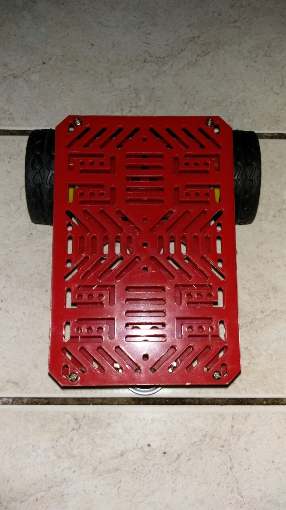
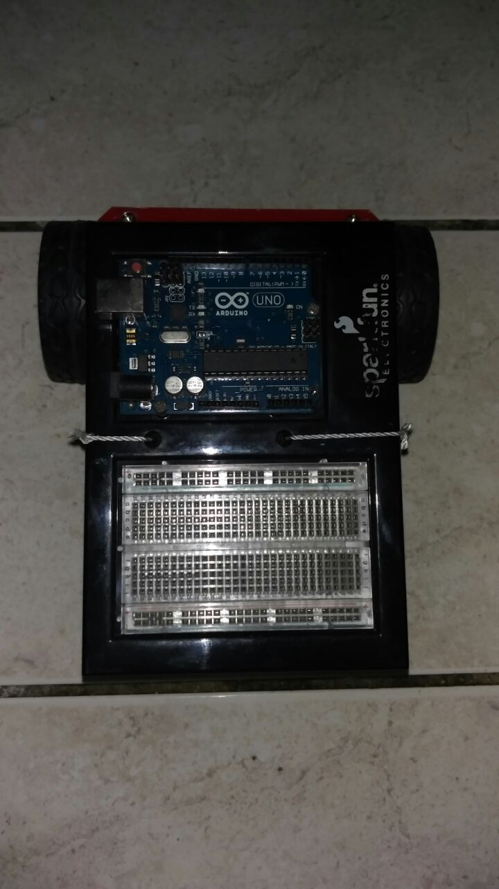
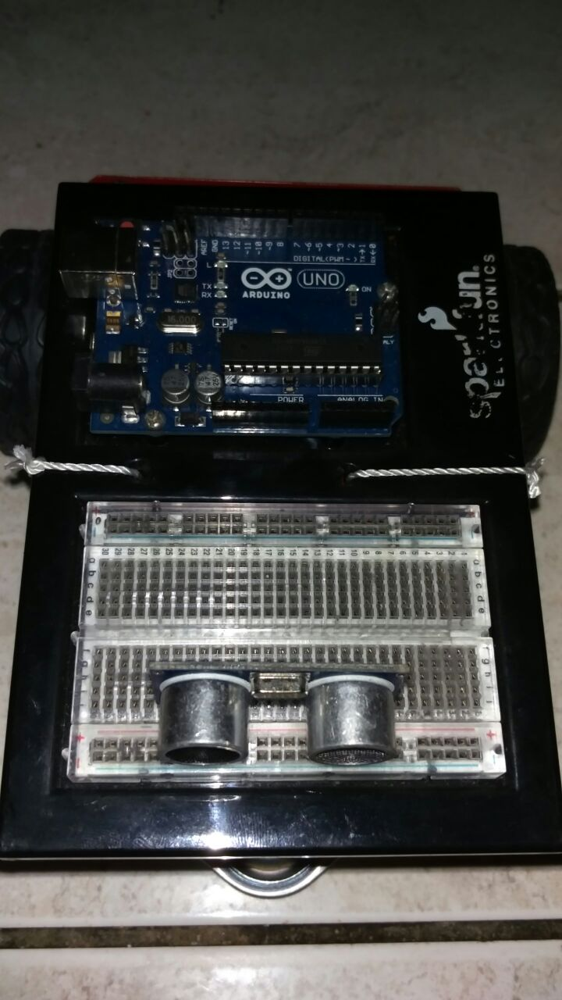
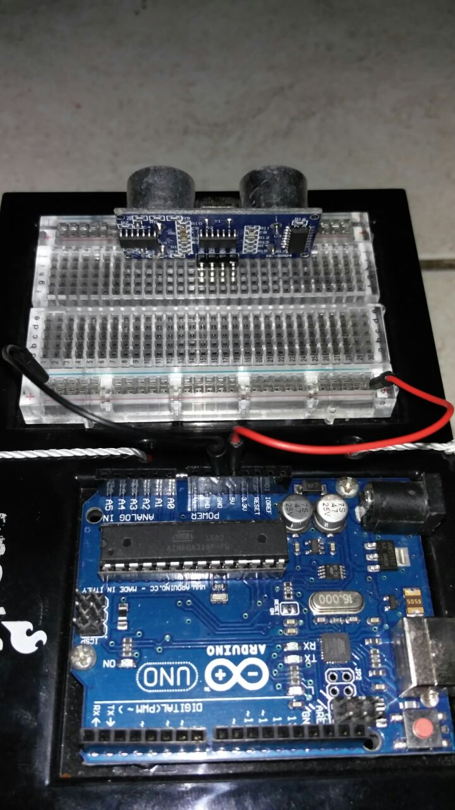
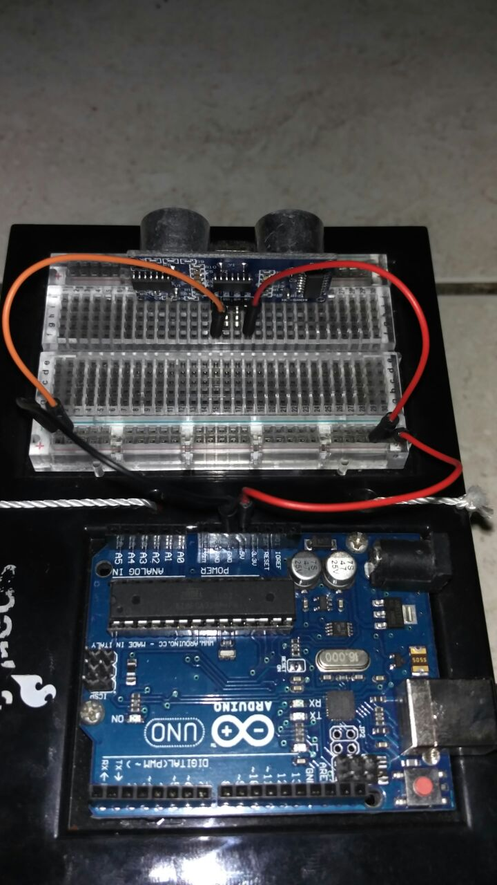
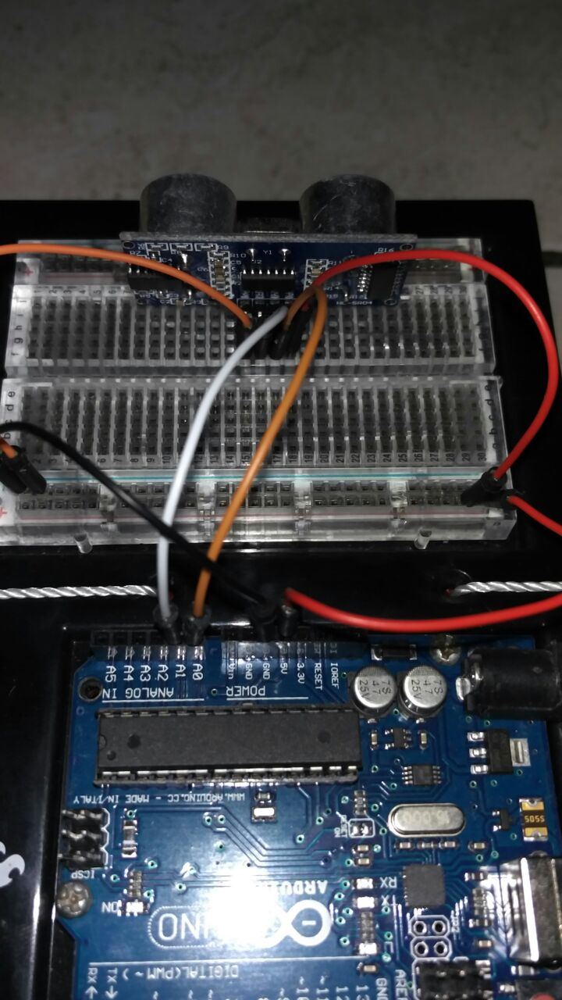
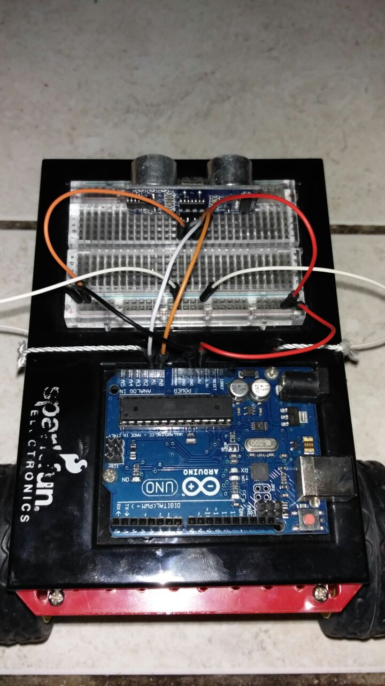
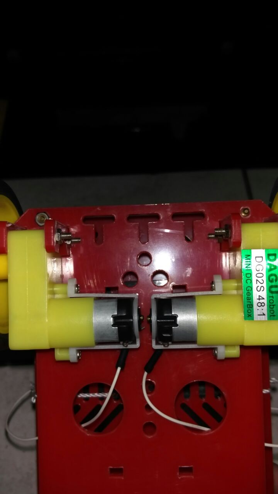
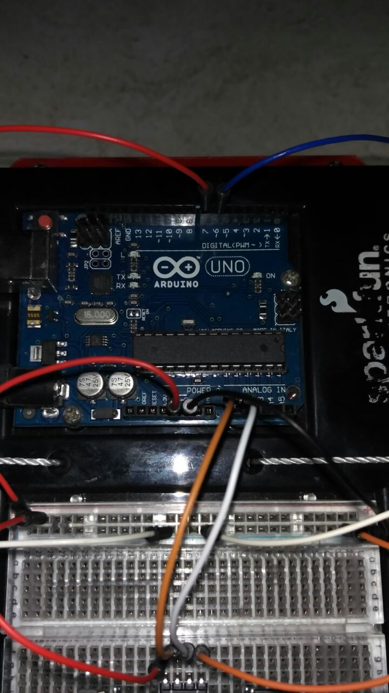
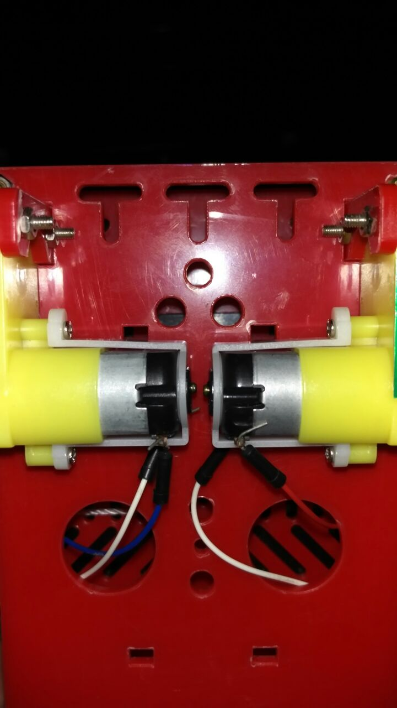

En este avance se mostrarán los pasos efectuados para llevar a cabo el ensamblaje del proyecto que consiste en armar tanto el hardware como el software de un carro autodirigible que evite colisiones con paredes. Se mostraran paso a paso el ensamblaje de la arquitectura y se explicará el código ensamblador que hace que el carro se mueva
A continuacion se muestra un video del carro en funcionamiento:
Imagen |
Descripcion del paso |
|---|---|
|  |
Paso 1: Una vez reunidos todos los materiales se procederá a armar la estrutura del carro |
|  |
Paso 2: Se monta la placa de arduino y la breadboard sobre la superficie del carro de manera que la breadboard quede al frente y la placa de arduino en la parte trasera |
|  |
Paso 3: Se coloca el sensor en la parte frontal de la breadboard, apuntando hacia el frente del carro |
|  |
Paso 4: Se conectan las entradas de voltaje (rojo) y la tierra (negro) de la placa de arduino a la breadboard |
|  |
Paso 5: Se conectan el voltaje (rojo) y la tierra (naranja) del sensor con sus respectivos pares en la breadboard |
|  |
Paso 6: Se conectan los pines del ECHO y el TRIG del sensor a las entradas analogas A0 y A1 en la placa de arduino |
|  |
Paso 7: Se colocan los negativos (tierras) de los motores de las llantas a la breadboard |
|  |
Paso 8: Se colocan los negativos del paso anterior en la parte superior de los motores |
|  |
Paso 9: Se conectan los positivos de los motores en los pines 6 y 7 digitales en la placa de arduino |
|  |
Paso 10: Se conectan los positivos del paso anterior en la parte inferior de los motores |
EL siguiente código ensamblador es la parte de software programada y subida a la placa de arduino, este código es el responsable de darle al arduino las instrucciones para ejecutar los motores del carro y por consiguinete hacer que este se mueva
El siguiente codigo ensamblador es el utilizado para para que el sensor de cercania funcione y así poder detectar si el carro se encuentra frente a una pared para cambiar de direccion
A continuacion se muestra un video del carro en funcionamiento con código ensamblador:
EL siguiente código ensamblador es la ultima parte de software programada el cual combina todas las partes que estamos utilizando(los motores, sensor utrasonico, estructura del carrito y arduino), para poder llevar acabo nuestro cometido de crear un carro que no choque en las paredes o en cualquier objeto que deba esquivar.